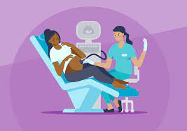
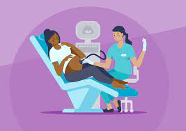

The Sinai Hospital is a world class hospital offering the best services in the region. We are located opposite Zion Mall which is found along the Nairobi-Nakuru highway
.jpeg)
.jpeg)
We offer a wide range of services from basic outpatient services to cardiology services. We offer the following medical services:
.jpeg) 

.jpeg)
.jpeg)
Welcome to The Sinai Hospital, where compassionate care meets cutting-edge medical technology. We are dedicated to providing exceptional healthcare services to our patients, ensuring their well-being and recovery. With a team of highly skilled professionals and state-of-the-art facilities, we strive to be a beacon of health and healing in our community.
At The Sinai Hospital, our mission is to deliver the highest quality of patient-centered care. We understand that each individual has unique healthcare needs, and our multidisciplinary team works collaboratively to create personalized treatment plans. Whether you require routine medical care, specialized procedures, or emergency services, our dedicated staff is committed to your health and comfort.
Our hospital boasts a comprehensive range of medical specialties and services. From advanced diagnostic imaging and laboratory services to surgical interventions and rehabilitation programs, we offer a full spectrum of healthcare under one roof. Our cutting-edge technology and innovative medical approaches enable us to provide accurate diagnoses and effective treatments, ensuring the best possible outcomes for our patients.
Patient satisfaction is at the core of our values. We continuously strive to improve our services and maintain the highest standards of quality and safety. Our commitment to excellence is evident in the positive outcomes we achieve and the trust we earn from our patients and their families.
The mission of The Sinai Hospital to offer customers the best Outpatient and Inpatient Medical Services at the best prices on the highest quality and standards in the region
Our core values are:
Our goals are: